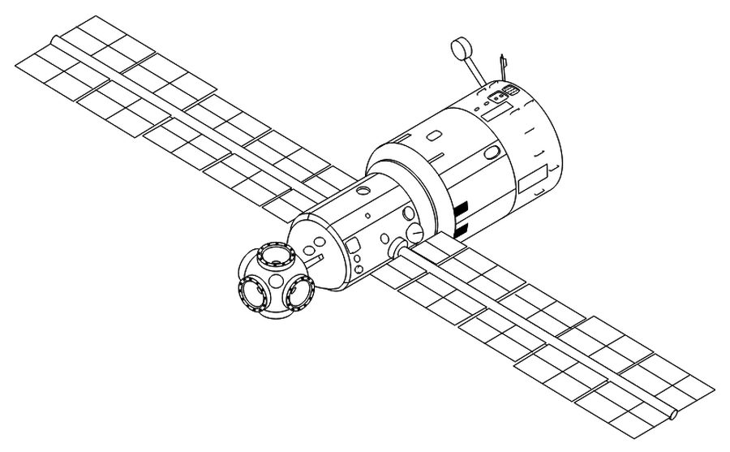
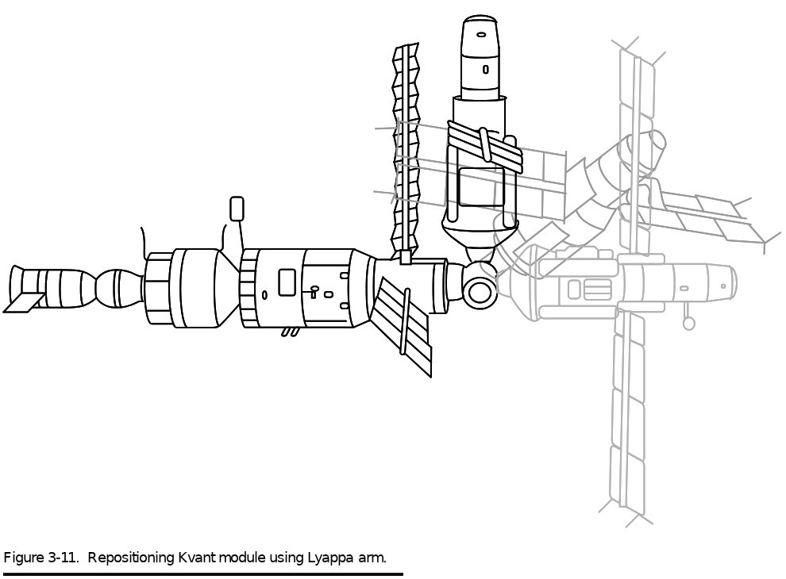

От замороженного проекта — к станции, собранной на орбите
Читается подряд. Нажми на удар — откроется подробный разбор с источниками.
Станцию из многих блоков проектировали с 1972 года. В 1974 году работу закрыли, а в 1976-м возобновили в НПО «Энергия».Узнать подробнееСвернуть
Новая станция должна была состоять из базового блока и отдельных модулей: технологического, дооснащения, для изучения природных ресурсов и других. Каждый модуль мог летать сам по себе и присоединяться к базовому блоку через стыковочный узел.
Источник: Российский государственный архив научно-технической документации (РГАНТД), «Запуск орбитальной станции „Мир“».
Базовый блок строили на основе «Салютов», но в 1984 году «Буран» забрал силы, и работы заморозили. Станцию спас секретарь ЦК Григорий Романов: велел закончить её к XXVII съезду партии.Узнать подробнееСвернуть
Базовый блок начали разрабатывать в начале 1979 года. О роли Романова пишет журнал «Родина». По данным РКК «Энергия», в работе участвовали около 200 предприятий и организаций.
Источники: «Родина», «40 лет назад СССР вывел на орбиту первую в мире многомодульную станцию „Мир“»; РКК «Энергия», «Орбитальный комплекс „Мир“».
20 февраля 1986 года «Протон» вывел на орбиту с Байконура только базовый блок — около 20 тонн и 13,13 метра в длину. Модулей у него ещё не было.Узнать подробнееСвернуть
В базовом блоке четыре отсека: переходный, рабочий, промежуточная камера и негерметичный агрегатный отсек. Блок управлял всем комплексом, давал электричество и связь и держал ориентацию станции. Работать на нём могли экипажи до шести человек.
Источники: РГАНТД, «Запуск орбитальной станции „Мир“»; РКК «Энергия», «Орбитальный комплекс „Мир“»; «Родина» (к 40-летию запуска).
Главная новинка — переходный отсек с пятью стыковочными агрегатами: один осевой и четыре боковых. Ещё один агрегат был на промежуточной камере в корме.Узнать подробнееСвернуть
У станций «Салют» на этом месте стоял конический переходный отсек с одним узлом. На «Мире» его заменил узел на пять портов. Все агрегаты базового блока были пассивными, системы «штырь — конус»: активную часть нёс прилетающий модуль или корабль.

Базовый блок «Мира» с узлом на пять портов. D. S. F. Portree, «Mir Hardware Heritage» (NASA RP-1357, 1995), с. 103, рис. 2-11. Общественное достояние. Источники: РКК «Энергия», «Орбитальный комплекс „Мир“»; D. S. F. Portree, «Mir Hardware Heritage» (NASA RP-1357, 1995), с. 103–105.
15 марта 1986 года к станции пристыковался «Союз Т-15». Леонид Кизим и Владимир Соловьёв первыми поднялись на борт «Мира» и проверили все его системы.Узнать подробнееСвернуть
Командир Кизим и бортинженер Соловьёв расконсервировали станцию. Программу полёта, по данным РГАНТД, они выполнили полностью. В тот же день экипаж сфотографировал базовый блок с «Союза Т-15»; снимок хранится в архиве под номером 1-5245цв.
Источник: РГАНТД, «Запуск орбитальной станции „Мир“».
В апреле 1987 года «Квант» промахнулся мимо станции, а со второй попытки застрял в узле: Романенко и Лавейкин вышли в открытый космос и убрали оттуда посторонний предмет.Узнать подробнееСвернуть
5 апреля система «Игла» потеряла станцию примерно за 200 метров, и «Квант» прошёл в десяти метрах от станции. 9 апреля модуль зацепился за кормовой узел, но штырь не втягивался до конца. 11 апреля Юрий Романенко и Александр Лавейкин вышли в открытый космос и нашли в узле посторонний предмет — по оценке NASA, мешок с мусором. Выход длился 3 часа 40 минут, после него «Квант» состыковался.
Источники: РКК «Энергия», «Орбитальный комплекс „Мир“» (даты запуска 31.03.1987 и стыковки 09.04.1987, посторонний предмет в приёмном конусе); D. S. F. Portree, «Mir Hardware Heritage» (NASA RP-1357, 1995), с. 110–111.
Боковые модули ставили в два шага: сначала стыковка к осевому узлу, потом манипулятор переносил модуль на боковой агрегат.Узнать подробнееСвернуть
Каждый боковой модуль нёс свой манипулятор («Ляппа»). Его конец цеплялся за гнездо снаружи узла, и рычаг поворачивал модуль на нужный боковой порт. Так же модуль можно было вернуть на осевой узел и переставить.

Перестановка модуля манипулятором «Ляппа». D. S. F. Portree, «Mir Hardware Heritage» (NASA RP-1357, 1995), с. 165, рис. 3-11. Общественное достояние. Источники: РКК «Энергия», «Орбитальный комплекс „Мир“»; D. S. F. Portree, «Mir Hardware Heritage» (NASA RP-1357, 1995), с. 165, рис. 3-10 и 3-11.
6 декабря 1989 года пристыковался «Квант-2», а через два дня манипулятор перенёс его на боковой узел. В модуле был шлюз с люком диаметром в метр — для выходов в открытый космос.Узнать подробнееСвернуть
«Квант-2» дооснащал станцию научной аппаратурой и оборудованием. В нём три герметичных отсека: приборно-грузовой, приборно-научный и шлюзовой. Его штатное место — боковой узел по оси Y.
Источники: РКК «Энергия», «Орбитальный комплекс „Мир“»; D. S. F. Portree, «Mir Hardware Heritage» (NASA RP-1357, 1995), с. 190.
10 июня 1990 года пристыковался «Кристалл» — модуль для технологических опытов. На нём стояли агрегаты для стыковки кораблей с андрогинно-периферийными агрегатами.Узнать подробнееСвернуть
У «Кристалла» три стыковочных агрегата: активный осевой и два андрогинно-периферийных — ещё один осевой и боковой. До мая 1995 года он стоял на боковом узле, который предназначался для будущего модуля «Спектр».
Источник: РКК «Энергия», «Орбитальный комплекс „Мир“».
В 1995 году «Кристалл» переставили на другой боковой узел, освободив место для «Спектра». 1 июня «Спектр» причалил к осевому узлу, и манипулятор перенёс его на боковой.Узнать подробнееСвернуть
27 мая «Кристалл» перевели на осевой узел, 30 мая — на штатное место. 10 июня его снова перевели на осевой узел, чтобы к нему пристыковался американский «Атлантис» (полёт STS-71), а 17 июля поставили обратно. На «Спектре» впервые по соглашению с NASA стояло американское оборудование для медицинских опытов.
Источники: РКК «Энергия», «Орбитальный комплекс „Мир“»; Роскосмос, «25 лет со дня запуска модуля „Спектр“» (2020).
26 апреля 1996 года пристыковался последний модуль, «Природа». Теперь станция была собрана целиком: базовый блок и пять модулей.Узнать подробнееСвернуть
Перед этим, в ноябре 1995 года, американский «Атлантис» (полёт STS-74) привёз стыковочный отсек РКК «Энергия» и поставил его на «Кристалл». Теперь шаттл мог причалить, и модули больше не приходилось переставлять.
Источник: РКК «Энергия», «Орбитальный комплекс „Мир“».
«Мир» проработал почти втрое дольше, чем было задумано: 28 экспедиций и больше 20 тысяч опытов. Его опыт перенесли на Международную космическую станцию.Узнать подробнееСвернуть
23 марта 2001 года станцию свели с орбиты в Тихий океан. На ней работали космонавты из 12 стран. Валерий Поляков провёл на ней без перерыва 437 суток 17 часов 59 минут. В 1997 году на «Мире» был пожар, а грузовой «Прогресс М-34» столкнулся со «Спектром» и пробил его корпус.
Источники: «Родина» (к 40-летию запуска); Роскосмос, «25 лет со дня запуска модуля „Спектр“»; РГАНТД, «Запуск орбитальной станции „Мир“».